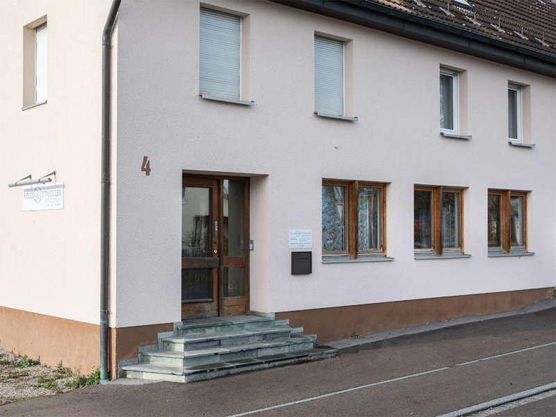
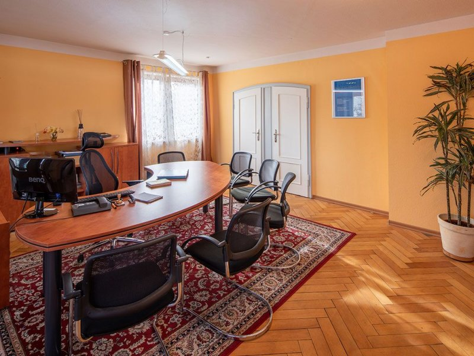
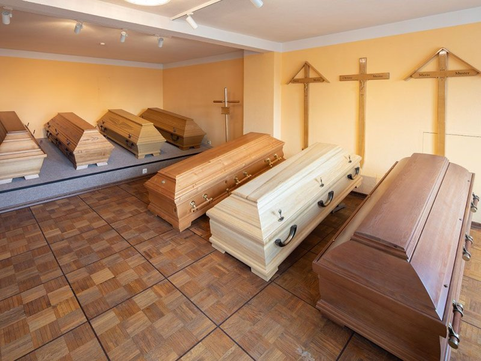
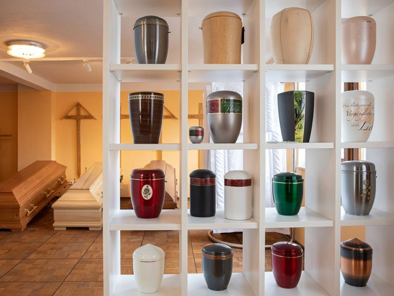

Keller & Ettmüller Bestattungen. Tannheim.
Seit dem 1. April 2012 wird Keller & Ettmüller in Tannheim von unserer Bestattermeisterin Katharina Ettmüller-Hummel geführt · in ruhiger Atmosphäre, mit kurzen Wegen.

Beratung in ruhiger Atmosphäre.
Im Anschluss an die Übernahme haben wir die Räumlichkeiten renoviert. In der ruhigen Atmosphäre der Geschäftsstelle beraten wir Sie gerne zu allen unseren Dienstleistungen. Neben dem Beratungsraum gibt es eine Sargausstellung sowie eine Auswahl an verschiedenen Kreuzen, Urnen und Garnituren.
Die Filiale ist auf Abruf besetzt. Wenn Sie in Tannheim spontan einen Termin benötigen, rufen Sie einfach an: Dann kommt einer unserer Mitarbeiter aus Memmingen zu Ihnen · normalerweise innerhalb einer halben Stunde.
Zeppelinstraße 4 · 88459 Tannheim
Telefon 08395 2386
Unsere Räume in Tannheim.



Für Tannheim und Umgebung.
Auf Abruf besetzt · im Bedarfsfall sind wir in rund einer halben Stunde bei Ihnen.
08395 2386